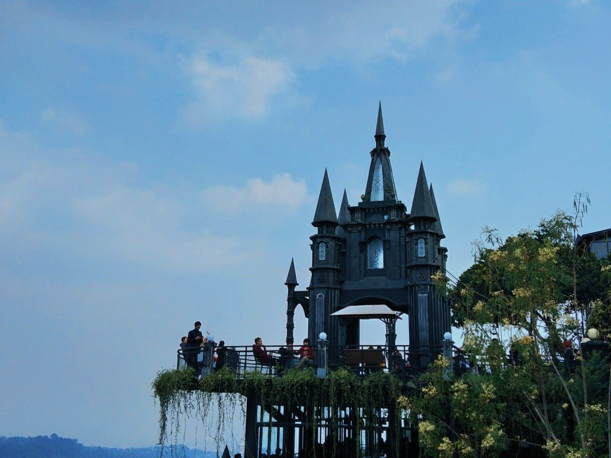
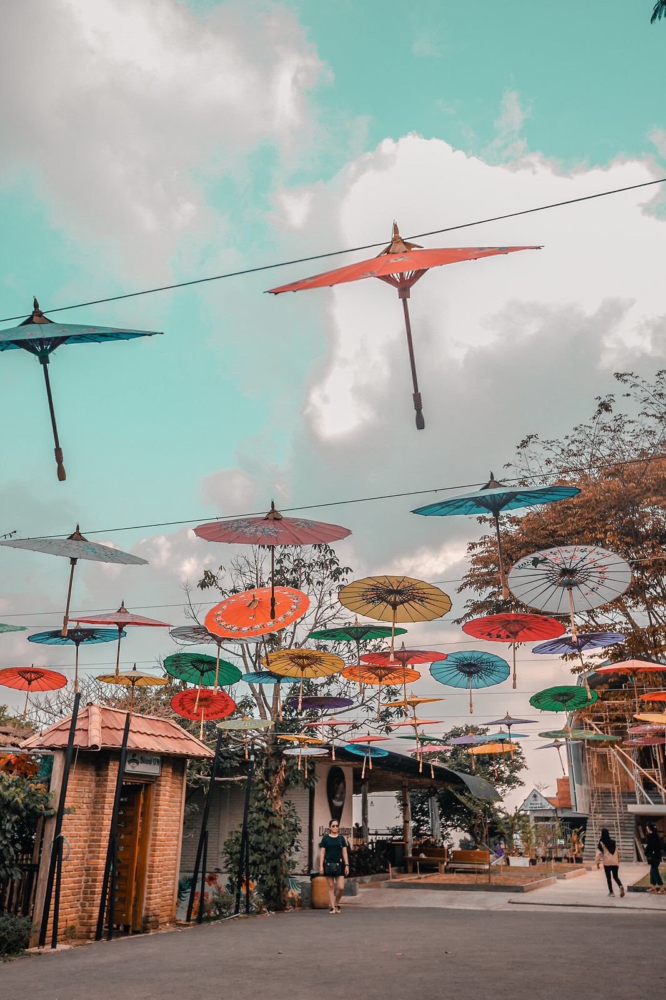
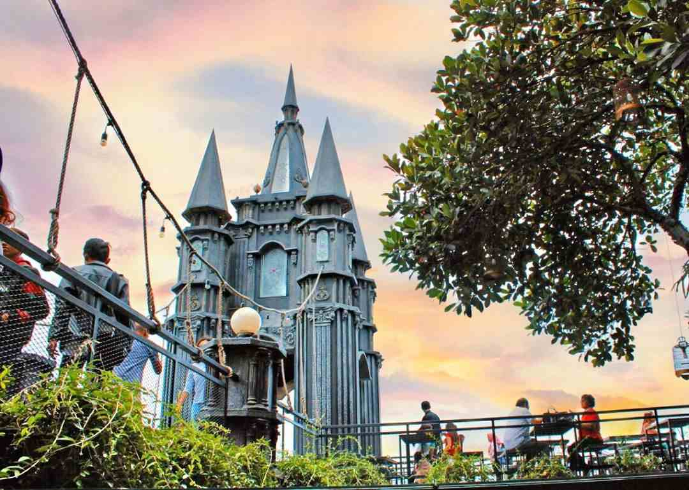
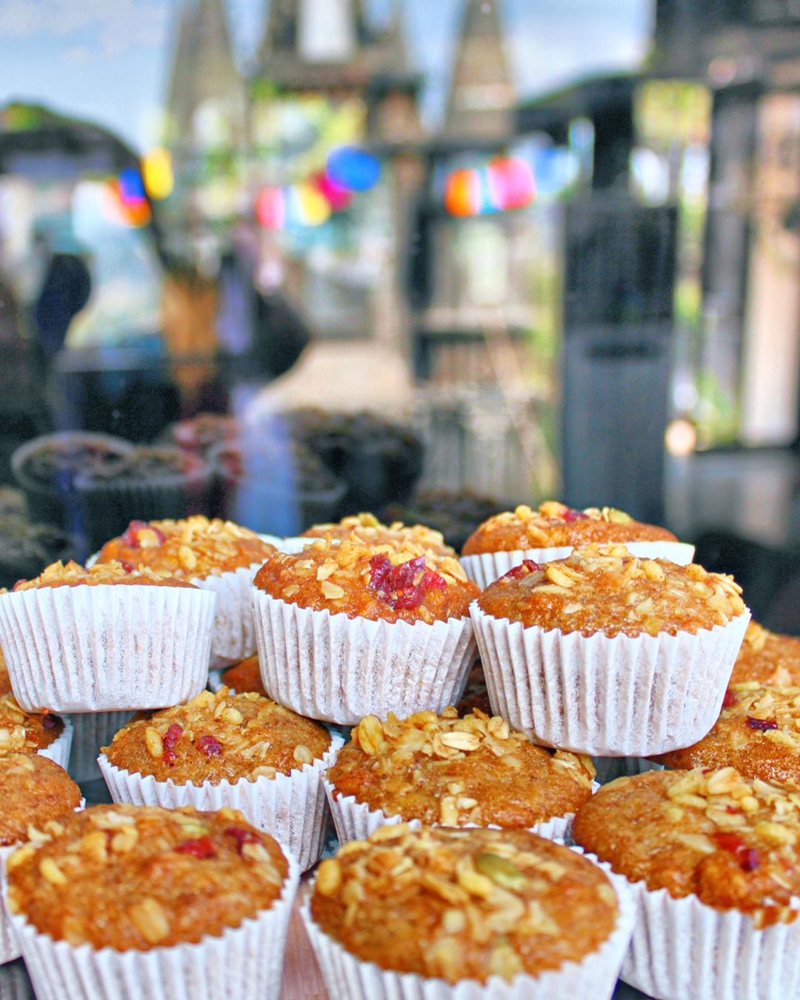
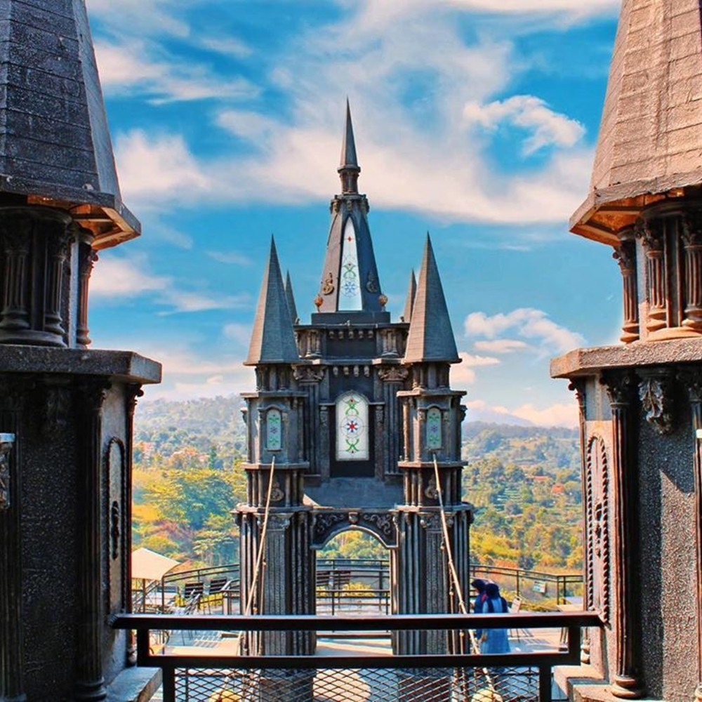
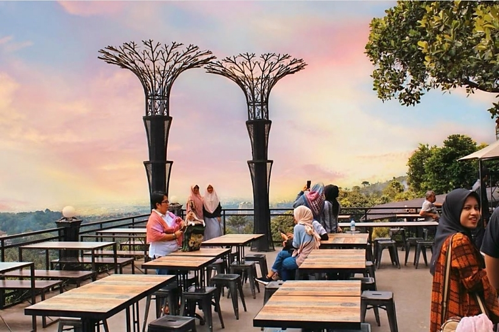
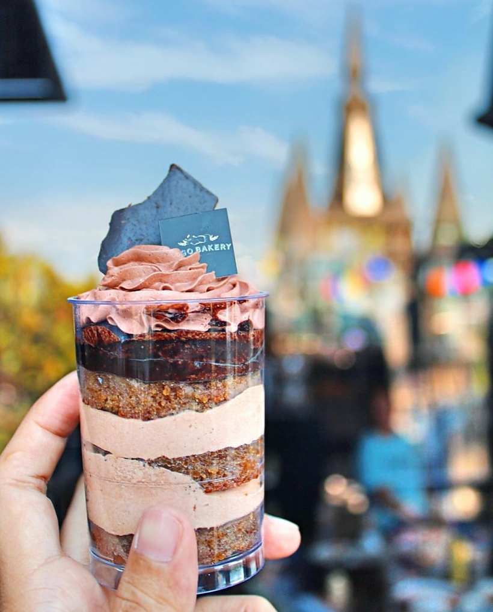
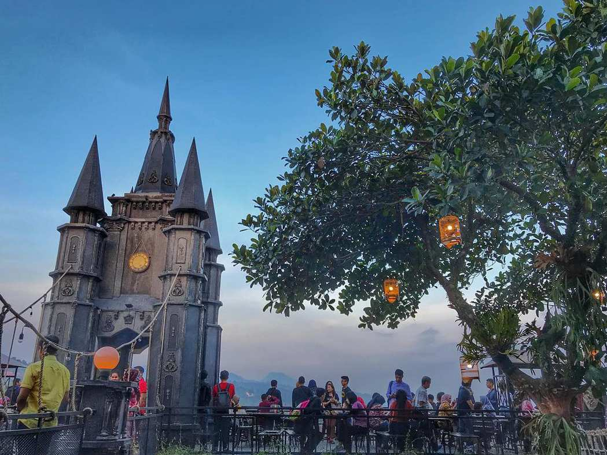

One of the top destination part of Wonderful Indonesia that worth visiting when you are in Bandung, we served traditional Indonesian food, Western food and other taste of the world.








Location and Contact
Jalan Ir. H. juanda No.497a Dago Coblong, Ciburial, Kec. Cimenyan, Bandung, Jawa Barat 40198, Indonesia